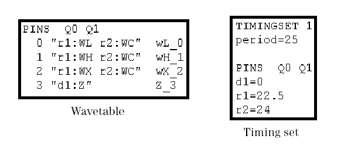

Timing Translation
First the timing translator translates the ASCII timing file. The information of the event sequences, which already contain delays for every action, is separated on the one hand into a wavetable, and on the other hand into a timing set.
The action sequences are converted into waveforms within a wavetable. Every state character definition results in one physical waveform, and each of these physical waveforms is associated with one physical waveform index, which is assigned automatically by the timing translator. Thus, every combination of state character, pin, and ASCII device cycle is mapped to exactly one physical waveform index.
The ASCII period and the delays specified in the state character definitions are converted into the test system cycle length and the delays of a timing set. In the most simple case, the values of the ASCII device cycle are copied into the timing set. But more complex conversions are often required.
The following figure shows the wavetable and timing set excerpts for Q0, Q1 that are generated from the ASCII timing file fragment displayed in ASCII Timing File:

Notice the following points in the figure:
- The action sequences of the 4 state character definitions are translated into 4 waveforms with the physical waveform DC/DC power units 0 through 3.
- The waveforms are coded in the pure physical waveform format. The first column contains the physical waveform index, the second the action sequence. The third optional column contains a physical device cycle name, which can be generated in different formats.
- The period and the delays are copied into timing set 1.
The timing translator also requires a pin configuration file to verify that all pins of the DUT are taken into account in the ASCII timing file, and that the state character definitions for these pins match their configuration. The pin configuration file is identical with the pin setup file as created with the SmarTest pin configuration.